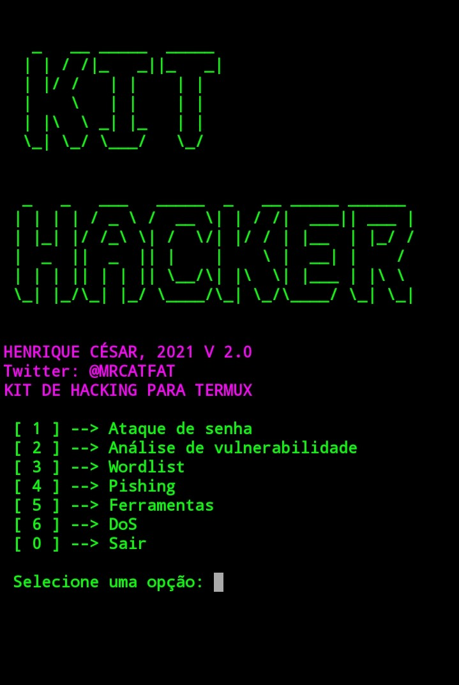

Instalação
apt update
apt upgrade
apt install python
apt install git
git clone https://github.com/Henrique139/KITHcd KITH
chmod +x *
python kith.py
Essa ferramenta foi criada com o foco em iniciantes no termux .
Contém diversas ferramentas para cada necessidade.
Espero que aproveite
HENRIQUE CÉSAR===Novidades 2.0===
Código totalmente refeito
Novas ferramentas adicionadas
FOTO DA INTERFACE
